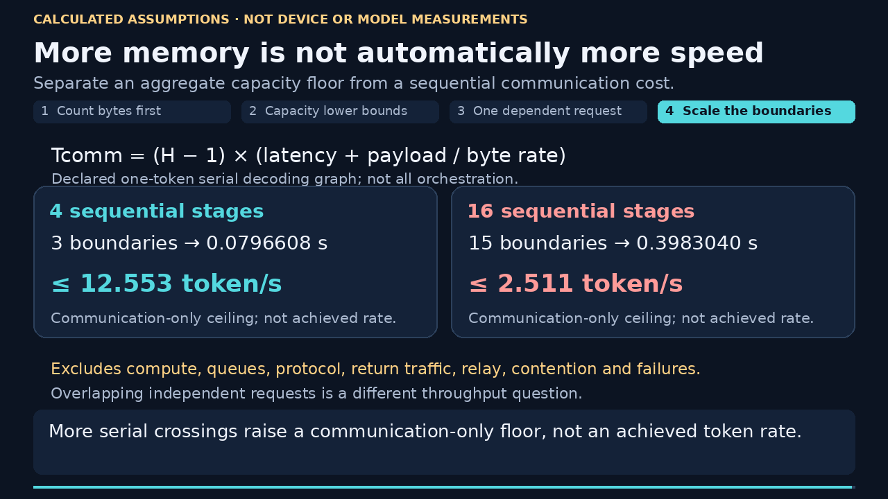

More memory is not automatically more speed
CALCULATED ASSUMPTIONS · NOT DEVICE OR MODEL MEASUREMENTS
24 seconds, no audio. Nothing plays automatically. The static poster and complete text are the reduced-motion path.

Download MP4 · Optional animated GIF · Static PNG · Plain-text transcript · Captions
Complete transcript and visual description
00–06s: Count bytes first
70 billion parameters times 4 bits divided by 8 is 35 billion bytes: 35.00 GB or 32.596 GiB. The illustrative envelope adds 20 percent weight overhead, 2.5 GiB FP16 KV cache and 2 GiB workspace, totaling 43.616 GiB. KV dimensions are 80 layers, 8 KV heads, head dimension 128, context 8192 and batch one.
06–12s: Capacity lower bounds
The ceiling of required bytes divided by assumed allocatable bytes gives an aggregate lower bound, not a placement guarantee. The pools must be simultaneously allocatable after reservations; no real free-memory measurements are used. Pool count does not automatically equal stage count.
12–18s: One dependent request
For one 16-KiB boundary over hypothetical 20-Mbps payload bandwidth with 20-ms one-way latency, the transfer time is 20 ms plus 16384 divided by 2500000 seconds, or 26.5536 ms. Four sequential stages require three such crossings, totaling 79.6608 ms of communication alone. The animated marker illustrates dependencies, not real-time measured packet motion.
18–24s: Scale the boundaries
For the declared one-token serial decoding graph with H sequential stages, Tcomm=(H-1)*(latency+payload/byte_rate). At four stages it is 0.0796608 seconds; the communication-only ceiling is 12.553 tokens per second. At sixteen stages it is 0.398304 seconds; the ceiling is 2.511 tokens per second. These exclude compute, queueing, protocol, return traffic, relay, contention and failures. Overlap across independent requests can alter throughput; it does not remove the dependency in this declared one-token serial graph. Speculative or multi-token decoding and different orchestration graphs need a different analysis; this is not a universal lower bound on all distributed inference.